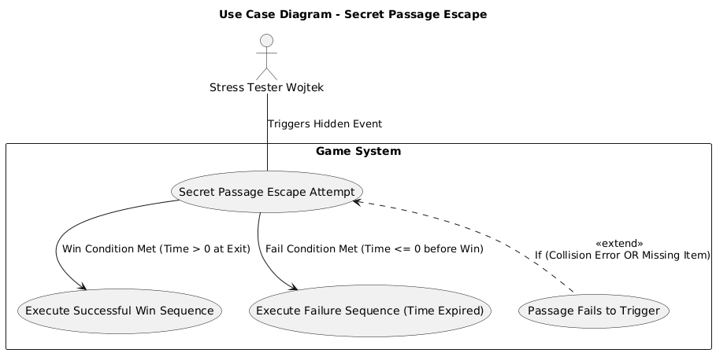
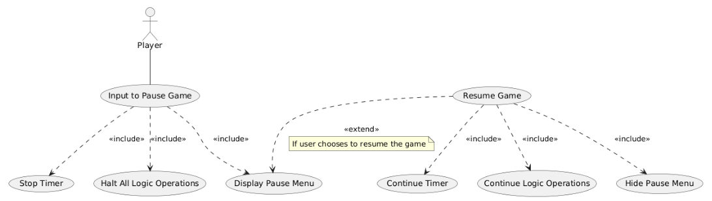
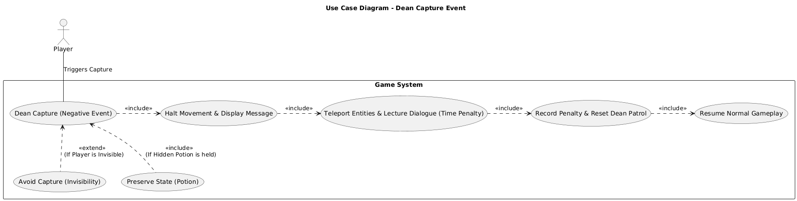
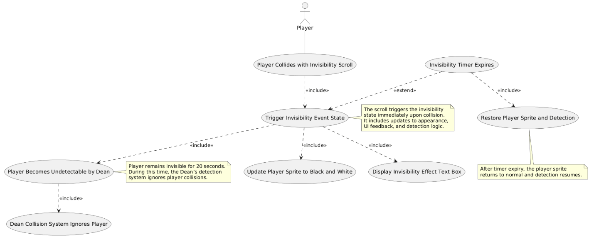

Use cases
Cohort 1, group 9:
Chris Sewell, Fedor Kurochkin, Matt Durham, Max Peterson, Oladapo Olaniran, Wojtek Tomaszewski, Yuqi Fu.
The following textual use cases detail scenarios involving a team member assuming the role of a player making a run through the maze and any edge cases that may occur.
- The first describes an anticipated win scenario involving a successful escape from the maze within the 5 minute timeframe including potential edge cases that may cause issues such as bugs and crashes if not addressed.
- The second describes a typical fail scenario and any edge cases that need to be considered.
- The third describes a player using the pause feature and potential edge cases surrounding its successful/unsuccessful execution.
Scenario 1:
Name <secret path escape run>
Primary Actor <stress tester Wojtek >
Precondition: <player is almost through the maze but has discovered a hidden event. Timer is constantly active>
Trigger: <Player triggers a hidden event that opens a hidden passage>
Main success scenario: <
- Player crosses event boundary and enters the secret passage
- Player moves through the passage towards the other side of the maze
- Player exits the passage now closer to exit
- Player crosses exit boundary before timer expires
- System prompts the victory text to appear
- Timer stops simultaneously
- Player hits an enter/accept key and returns to main menu
>
Secondary scenario (edge cases) : <
- 1.1: Hidden passage fails to trigger due to missing item or collision error etc
- 1.2: Timer expires while player is inside hidden passage
- System prompts failure message successfully inside the passage without crashing or reporting error codes
- 1.3: Timer expires while player is on the maze exit boundary
>
Success Postcondition: <
- “You win” message prompt always appears when a player escapes the maze within the time limit
- 1.1: Player is still able to take a normal route to exit
- 1.2: System prompts failure message successfully inside the passage without
Crashing or reporting error messages
- 1.3: If player is on or behind maze boundary when timer expires, failure message prompt is executed
>
Minimal Postcondition: <Either victory or fail message always prompts when the player either escapes within the time or fails to do so. The prompt is dependant upon the timer and player crossing maze exit boundary>

Scenario 2:
Name <Time expired>
Primary Actor <player>
Precondition <The player has not yet reached the maze exit boundary and the timer is close to expire>
Trigger <Timer reaches 00:00 before the player crosses the escape boundary>
Main scenario <
- Player is mid movement command when the timer expires
- The system immediately halts player movement effectively pausing the game.
- Static image with a failure message “game over!” will appear along with the time indicating 5 minutes elapsed.
- The player is offered the option to restart or quit the application.
- Any input from the player other than menu option keys will be ignored.
- The player can then restart the application for a new run of the maze.
>
Secondary scenarios <
- 1.1 Should player be on the exit boundary when timer expires, system resolves ties with the failure scenario
- 1.2 If the timer fails to stop due to a bug, player control should remain active to allow for testing and debugging.
>
Success postcondition <Game will consistently prompt the “Game over!” static screen when the timer expires under all conditions>
Minimal postcondition <The game cannot enter the win state (win static image prompt) if the timer expires >

Scenario 3
Name <Pause/Resume>
Primary Actor <player>
Precondition <Player is in the middle of a maze run and timer is active >
Trigger <player presses the ‘pause’ key>
Main scenario <
- system halts all player movement and all event logic with the timer freezing on current value
- ‘Pause menu’ appears with the option to resume or quit to main menu
- Player can only use the up/down keys or the enter/accept key
- The player selects ‘resume’
- System unfreezes the timer and system resumes the game and any scripts from same position
>
Secondary scenarios <
- 1.1 Player pauses during a triggered event
- 1.2 Player attempts to pause during a menu transition or during tutorial script
>
Success postcondition <
- Games resumes from exact condition upon input ‘pause’ command with timer current value preserved
- 1.1 System stores/caches current event state and resumes safely without crashing or causing an error message
- 1.2 System ignores pause key during those instances
>
Minimal postcondition <Timer value, player position and event states all preserved in exact state prior to ‘pause’ command >

Updated use cases and sequence diagrams after the first iteration of map design.
After reviewing the use cases, initial architecture diagrams and requirements referring system, the team formulated a new maze with updated event systems to ensure requirements were met.
See Initial map design on the Design Iterations page of the website.
Following the 5 steps of software development outlined by Sommerville (2016) the team realised the need to update the product to better meet and integrate the following requirements: UR_EVENTS, FR_EVENTS, UR_EASE, UR_ESCAPE, FR_MAP, CR_TIMEFRAME, UR_SCORE, FR_SCORE_CALC and FR_COLLISION.
Updated events:
The new event systems were updated to better utilise the limited map size in a realistic time frame for the prototype phase of assessment 1.
The size of the map was optimised by having a single enemy AI patrol (serving as the negative event) in a location that the player would need to pass multiple times backtracking through the maze.
See updated negative event use case below.
See ‘Dean capture’ sequence diagram on the Architecture deliverable page of the website.
Along with the updated negative event system the team decided to remove the secret passage hidden event in order to make the game more balanced (UR_EASE was not adequately met).
After the use cases, requirements review and player testing, the team found the player could avoid the negative event too easily, almost making it redundant.
Instead, a new hidden event involving a secret character and a bonus to the player score replaced the passage, further encouraging the player to explore the maze leading to other events or discovering the way out.
After reviewing steps 3 and 4 of creating software, (analysing the proposed components roles and characteristics) the team implemented the new maze design described above with updated events to compliment the new design choices.
The events were updated to include:
- A scroll providing temporary invisibility from the patrolling Dean (Positive event).
- The Dean negative event will send the player back to the starting room should the player cross the Dean's 3x3 detection collision tiles.
Along with costing time by being sent back, the player will also be deducted points from the player's end (score should they escape the maze in time).
- The hidden event will be triggered should the player cross a hidden 3x1 tile area in the classroom.
The player will need to get a potion from the other room and return with it to be rewarded with bonus points to the player score.
This further encourages the player to explore the other room which includes key escape items and exposes them to the positive event.
Additionally this hidden event will force the player to try to avoid the Dean’s patrol again adding to the overall difficulty balance of the game.
Post evaluation use cases:
Scenario 4 (updated win during positive event)
Name <Win invisible>
Primary Actor <Player>
Precondition <The player is still invisible whilst heading for the exit door >
Trigger <The player reaches the exit threshold whilst the effects of the invisibility scroll are still active >
Main scenario <
- The player crosses the threshold whilst invisible
- The effects of the invisibility do not conflict with the win condition in any way.
- Should the invisibility state be bugged, it will not clash with the win condition either.
- The game prompts the static image win condition screen.
- The score is displayed and calculated correctly based on the player's time remaining, any negative events triggered and the hidden event bonus should the player have triggered it.
- The game shuts down if the player selects the quit key.
>
Secondary scenarios <
- 1.1 The Dean’s patrol radius reaches the player as they are on the exit boundary.
>
Success postcondition <
- The game enters the win state as normal.
- 1.1 Since the player is still invisible the negative event is not triggered and the game enters win state normally.
>
Minimal postcondition <The game enters the win state regardless of invisibility condition and the score is correctly calculated based on the player’s remaining time and events triggered >

Scenario 5 (negative event)
Name <Dean Capture>
Primary Actor <player>
Precondition <The player is attempting to evade the Dean’s 3x3 collision patrol area >
Trigger <The player enters one of the Dean’s 3x3 detection tiles while not invisible >
Main scenario <
- Collision system detects overlap between the player collider and Dean detection tile area.
- The system halts all player movement with inputs ignored and a text box appears above the Dean informing the player has been caught.
- The player and the Dean are teleported to the starting room.
- The Dean delivers a text box lecture sequence (wasting time)
- After the dialogue completes the Dean returns to the patrol route (reset).
- The player resumes control from the start room.
- System increments the ‘caught by Dean’ counter for the end of score penalty.
>
Secondary scenarios <
- 1.1 If the player is invisible, the Deans collision system ignores the player and the event is not triggered.
- 1.2 If the player has the hidden event potion in possession when caught, the system retains the player state of possessing the potion during and after the negative event.
>
Success postcondition <
- The player and Dean return to normal play state after the event.
- The player position resets and the Dean resumes patrol.
- The system records each instance of being caught for the point penalty.
- The system consistently recognises the players ‘invisibility state’ for each Dean collision when invisible.
>
Minimal postcondition <
- The game resumes cleanly with the timer continuing throughout the event.
- No crashes or bugs occur during the event including correct handling of the teleporting sequence.
- >

Dean capture with invisibility and potion edge case.

Scenario 6 (positive event)
Name <Invisibility scroll>
Primary Actor <player>
Precondition <
- Player was previously caught by the Dean and is searching for alternative routes/ items
- The scroll exists as an instant activation item via player collision
>
Trigger <The player collides with the scroll tile activating it >
Main scenario <
- The scroll triggers the ‘invisibility event state’ immediately upon player collision.
- The scroll updates the player sprite to render as black and white (representing invisibility).
- The player is prompted of the effect via a text box.
- The player becomes undetectable by the Dean for 20 seconds
- During this time the Dean’s collision system ignores the player
- The player sprite returns to normal when the invisibility timer expires and detection resumes
>
Secondary scenarios <
- 1.1 The player is invisible when crossing the exit boundary.
- 1.2 The player is invisible when interacting with the mouse hole.
- 1.3 The player is invisible when colliding with the hidden potion.
>
Success postcondition <
- 1.1 The win state is unaffected by the player's invisibility state. The game prompts the win screen and calculates the score correctly without error.
- 1.2 The player is still able to interact with the mouse hole and trigger the speech boxes.
- 1.3 The collision data between player invisibility and potion tile do not conflict and act as normal (player enters posses potion state upon collision and the potion disappears)
>
Minimal postcondition <
- The scroll’s effect will remain active for the full duration.
- The system ensures invisibility rendering upon activation
- The Dean collision and event system is never triggered whilst player is in invisibility state
- The pause feature halts the invisibility timer correctly
>


References
International Organization for Standardization (2017) ISO/IEC/IEEE 12207:2017 – Systems and software engineering — Software life cycle processes. Geneva: ISO.